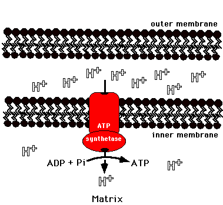

Metabolism Problem SetProblem 17 Tutorial: ATP synthaseATP synthase can produce ATP using as a direct energy source: Production of ATP by ATP synthaseThe electrons from from NADH and FADH2 flow through the electron transport chain in the inner mitochondrial membrane generating a H+ buildup in the inner membrane space. This proton gradient (gradient of H+) flowing through the membrane enzyme complex ATP synthetase is the direct energy source for producing ATP.  |